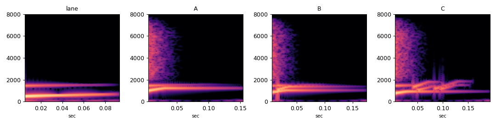

부서짐 소리 "칭" 후보
피한 장애물이 박에 부서질 때 나는 소리입니다. lane_c와 같은 재료, 울림 없음. 게임에는 일단 A가 들어가 있습니다. 하나를 골라 알려 주세요.
지금 고른 소리:
후보
A 맑은 칭lane_c를 위로 옮긴 짧은 사인
B 겹 칭높은 음이 15ms 늦게 따라옴
C 흩어지는 칭조금 낮은 몸통 + 작은 조각 소리 5개
lane 뒤에 이어 듣기레인 이동 소리 → 0.3초 쉼 → 고른 소리
같이 듣기
게임의 곡에 맞춰 박마다 고른 소리가 납니다. 게임처럼 매번 ±0.5반음 무작위이고, 음악과 효과음 크기 비율도 게임과 같습니다.
측정
숫자 표는 report.md에 있습니다.
